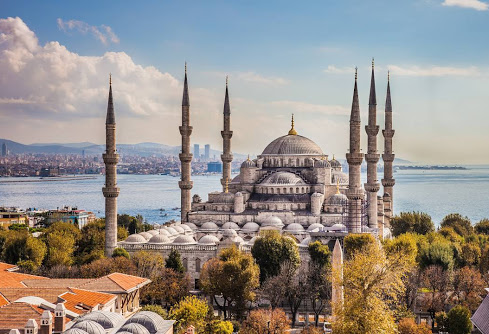
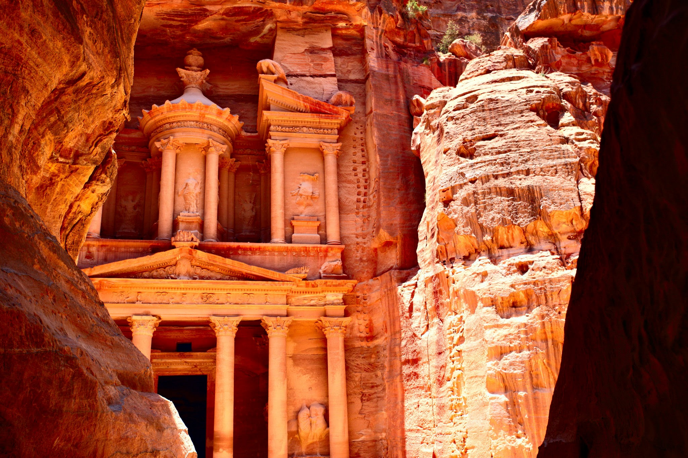
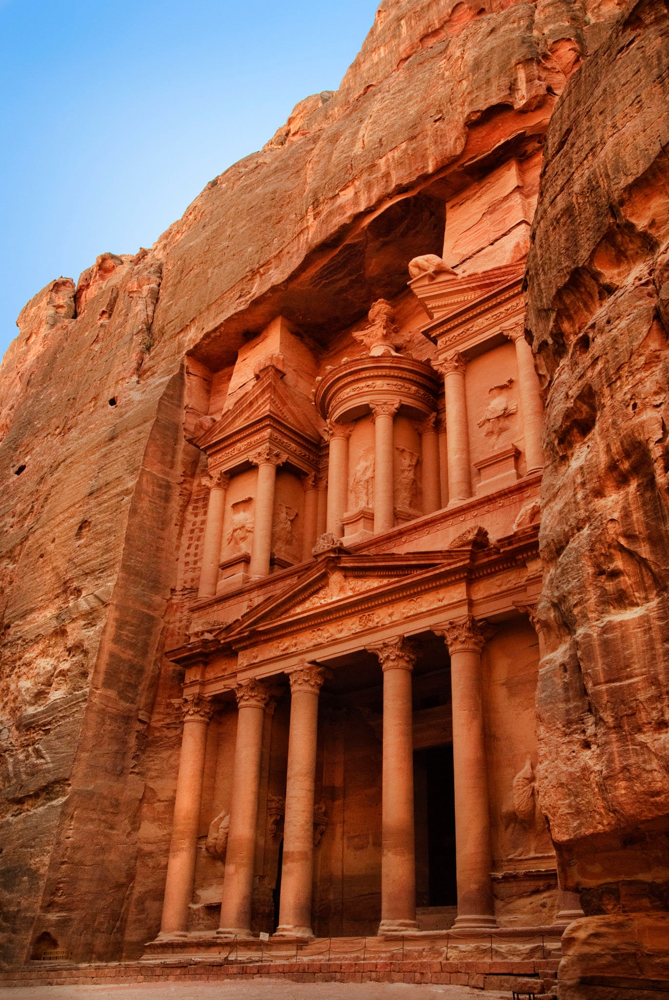
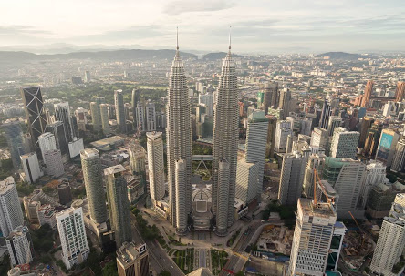
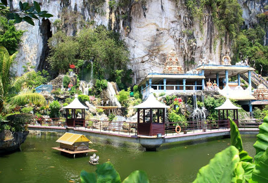
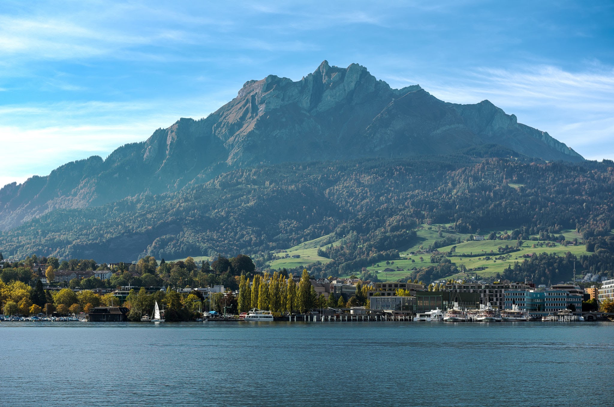

Turky
Turkey is a nation straddling eastern Europe and western Asia with cultural connections to ancient Greek, Persian, Roman, Byzantine and Ottoman empires. Cosmopolitan Istanbul, on the Bosphorus Strait, is home to the iconic Hagia Sophia, with its soaring dome and Christian mosaics, the massive 17th-century Blue Mosque and the circa-1460 Topkapı Palace, former home of sultans. Ankara is Turkey’s modern capital.
 |
 |
| Bosporus | The Blue Mosque |
Jordan
Jordan, an Arab nation on the east bank of the Jordan River, is defined by ancient monuments, nature reserves and seaside resorts. It’s home to the famed archaeological site of Petra, the Nabatean capital dating to around 300 B.C. Set in a narrow valley with tombs, temples and monuments carved into the surrounding pink sandstone cliffs, Petra earns its nickname, the "Rose City."
|  |  |
| Petra | Al-Khazneh |
Malaysia
Malaysia is a Southeast Asian country occupying parts of the Malay Peninsula and the island of Borneo. It's known for its beaches, rainforests and mix of Malay, Chinese, Indian and European cultural influences. The capital, Kuala Lumpur, is home to colonial buildings, busy shopping districts such as Bukit Bintang and skyscrapers such as the iconic, 451m-tall Petronas Twin Towers.
|  |  |
| Petronas Twin Towers | Batu Caves |
Switzerland
Switzerland is a mountainous Central European country, home to numerous lakes, villages and the high peaks of the Alps. Its cities contain medieval quarters, with landmarks like capital Bern’s Zytglogge clock tower and Lucerne’s wooden chapel bridge. The country is also known for its ski resorts and hiking trails. Banking and finance are key industries, and Swiss watches and chocolate are world renowned.
 |
 |
| Mount Pilatus | Lake Lucerne |